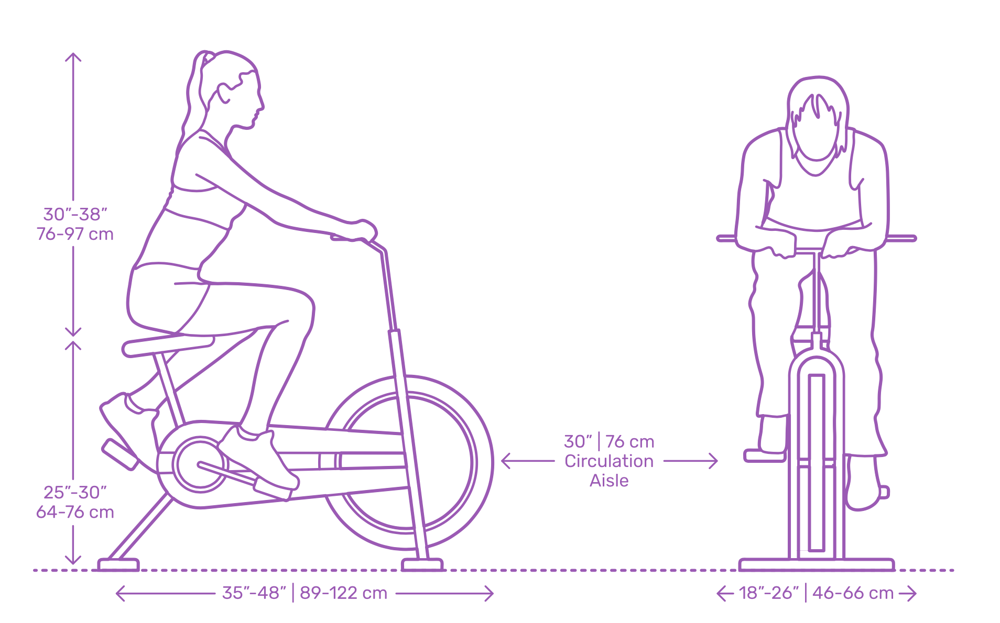

FitLife Fitness and Training Center!!
Exercise Bikes
Commit to be fit!
An exercise bicycle, or stationary bicycle, exercise bike, spinning bike, or exercycle, is a fundamental
piece of exercise equipment for use at the gym, spin class, or at home. Constructed as a machine that
transfers the proportions of an ordinary bicycle into a stationary format, exercise bicycles today have
transformed through the incorporation of mechanisms and monitors for added resistance settings and
performance tracking for more targeted workouts. The low-impact design of an exercise bicycle has made it
popular for general fitness exercise, endurance, weight loss, physical therapy, and indoor training for
cycling events.
SPECIFICATIONS:

For beginners:
Start off pedaling at a low intensity for 5-10 minutes.
Switch to medium intensity for 5 minutes, followed by:
high intensity for 1-2 minutes
medium intensity for 5 minutes
high intensity for 1-2 minutes
medium intensity for 5 minutes
Finish by pedaling at a low intensity for 5 minutes.
For weight loss:
Start off pedaling at a low intensity for 5-10 minutes.
Switch to medium intensity for 3-5 minutes.
Alternate between high intensity (1-3 minutes) and medium intensity (3-5 minutes).
Cool down by pedaling at a low intensity for 5-10 minutes.
For interval training:
Start off pedaling at a low intensity for 10 minutes.
Switch to medium intensity for 10 minutes, followed by:
high intensity for 2 minutes
low intensity for 2 minutes
high intensity for 2 minutes
low intensity for 2 minutes
high intensity for 2 minutes
Cool down by pedaling at low intensity for 5-10 minutes.
Over time, you can increase your intervals one minute at a time.